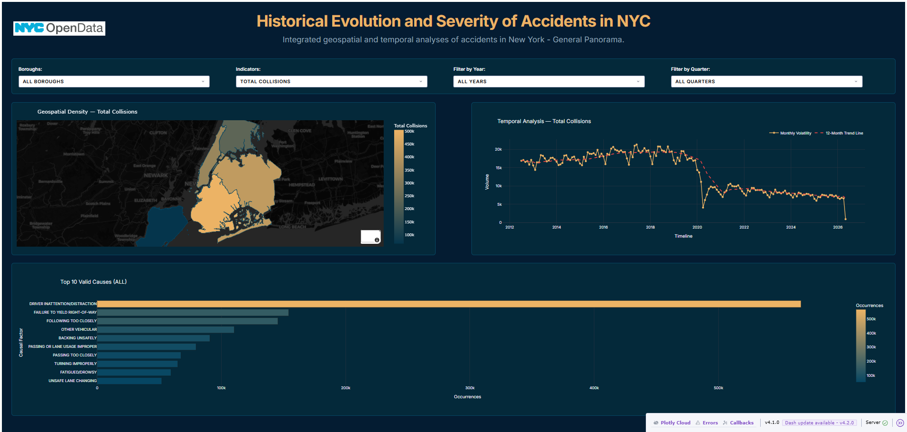

End-to-end data engineering pipeline built on the Medallion Architecture, processing over 2.26 million accident records across all five boroughs of New York City.
Explore Dashboard
Built as a real-world demonstration of end-to-end pipeline engineering, this project ingests, validates, transforms, and visualizes 2.26 million traffic accident records from New York City's Open Data portal.
Medallion architecture (Bronze → Silver → Gold), Docker containerization, DVC orchestration with DAG pipelines, and pg_cron scheduling for automated materialized view refreshes.
Incremental ingestion via SODA API in 50K batches, batch chunking engine (100K rows), atomic upsert with ON CONFLICT, and resilient dual-engine fallback (PyArrow → C engine).
PostGIS geometry indexing with GiST spatial trees, OGC WKT coordinate conversion (SRID 4326), NYC bounding box validation filtering 11% of spurious GPS data.
Materialized views delivering sub-millisecond queries, Dash/Plotly reactive dashboard with cross-filtering, 12-month moving average trend lines, and choropleth mapping.
From raw API ingestion to sub-millisecond analytics — each layer adds quality, governance, and performance.
The entry point of the pipeline. Performs hybrid ingestion (historical + incremental) from NYC Open Data's SODA API with built-in resilience and idempotency guarantees.
Consolidates data quality and governance. Applies Pydantic data contracts, spatial enrichment via PostGIS, and timezone normalization to UTC — all processed in memory-efficient chunks.
The final layer reduces 2.26M rows to under 1,000 pre-aggregated records using materialized views. Daily refresh is orchestrated by pg_cron directly inside the database container.
Explore collision data across all five boroughs with cross-filtering, temporal trends, and geospatial density mapping powered by the Gold layer.
Every technology in this stack was chosen to mirror real-world enterprise data engineering environments.